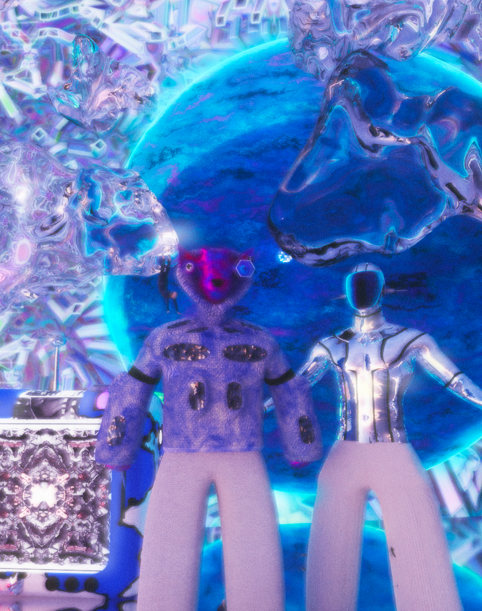
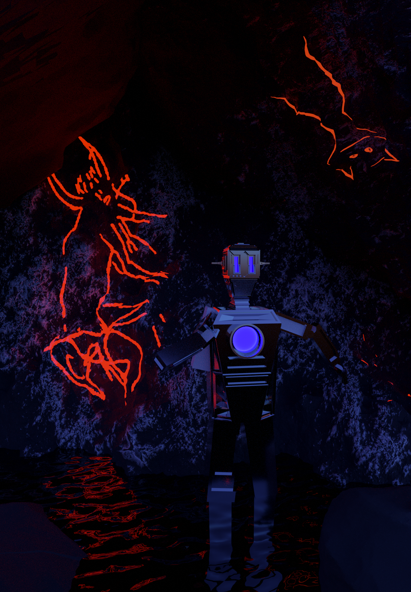

ANIMATION 3D
After a year in the Art & Design preparatory program, I discovered a passion for a new medium: 3D software. Self-taught, I learn to work with color, textures, light, movement, shapes, proportions, and illustration. I now have the compulsive eye of an observer on the world.
My personal universe unfolds as I explore, with an artistic approach, subjects that intrigue, worry, amuse, or challenge me.



